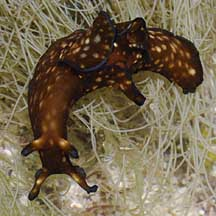
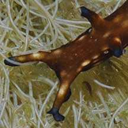
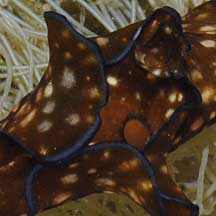

|
|
| sea hares text index | photo index |
| Phylum Mollusca > Class Gastropoda > sea slugs > Order Anaspidea |
| Mini
sea hare Aplysia parvula Family Aplysiidae updated May 2020 Where seen? This small, well camouflaged sea hare is seldom spotted. Features: About 5cm. A long thin body with a pair of small 'wings' in the middle and long oral tentacles and rhinophores. The hole between the wings (called the foramen) is large in this sea hare and is usually ringed in black. In other sea hares, the foramen is microscopic. They come in a wide variety of body colours but usually the 'wings' have a black edge and the tips of the rhinophores and oral tentacles are dark. It is among the smallest of the Aplysia sea hares, and 'parvus' means 'little'. (It isn't the smallest sea hare: the seagrass seahare (Phyllaplysia sp.) is much smaller). Sometimes mistaken for the Leaf slug (Elysia ornata) which is not a sea hare but a sap sucking slug. The Leaf slug only has one pair of tentacles and its 'wings' are much longer, extending along most of the body length. |
 Sisters Island, Feb 10 |
 Rhinophore and oral tentacle tips dark. Tiny eyes under the rhinophores. |
 Large foramen ringed in black. |
| Mini sea hares on Singapore shores |
On wildsingapore
flickr
|
| Other sightings on Singapore shores |
| Filmed on Sisters
Island, Feb 10 Aplysia parvula sea hare from SgBeachBum on Vimeo. |
Links
|